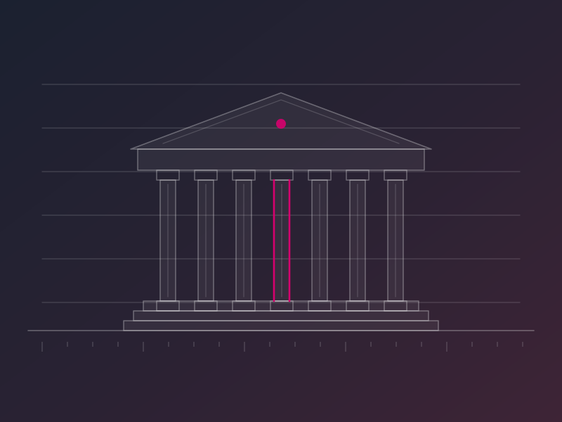
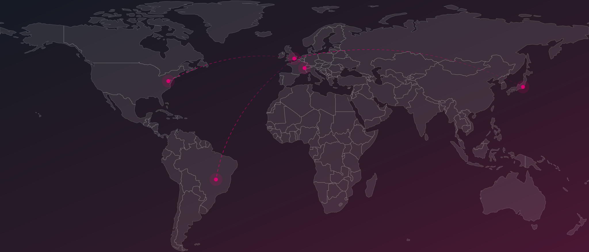
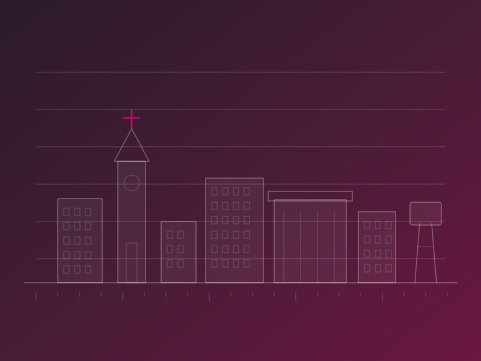
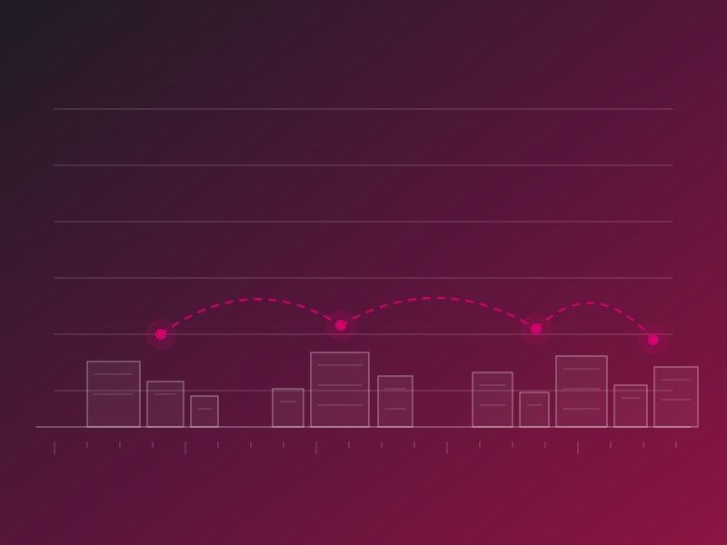
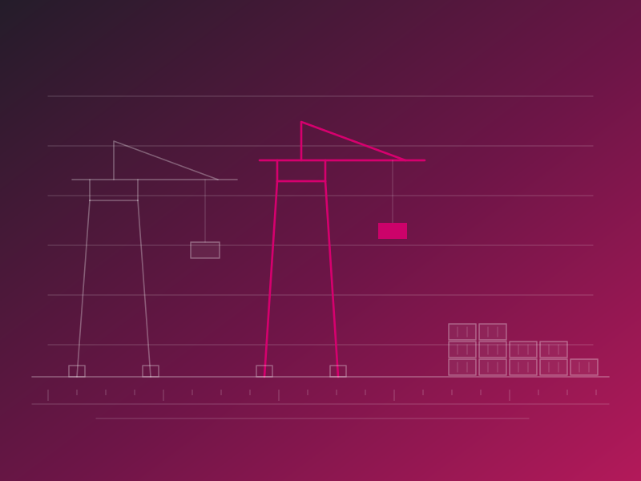
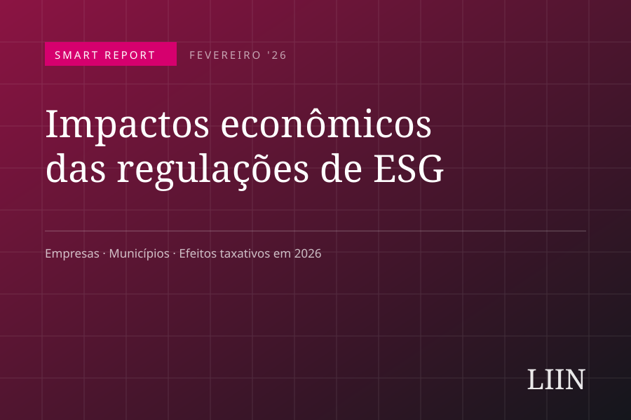
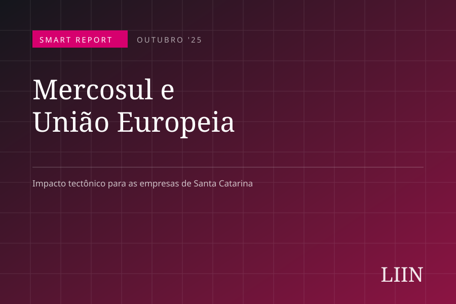
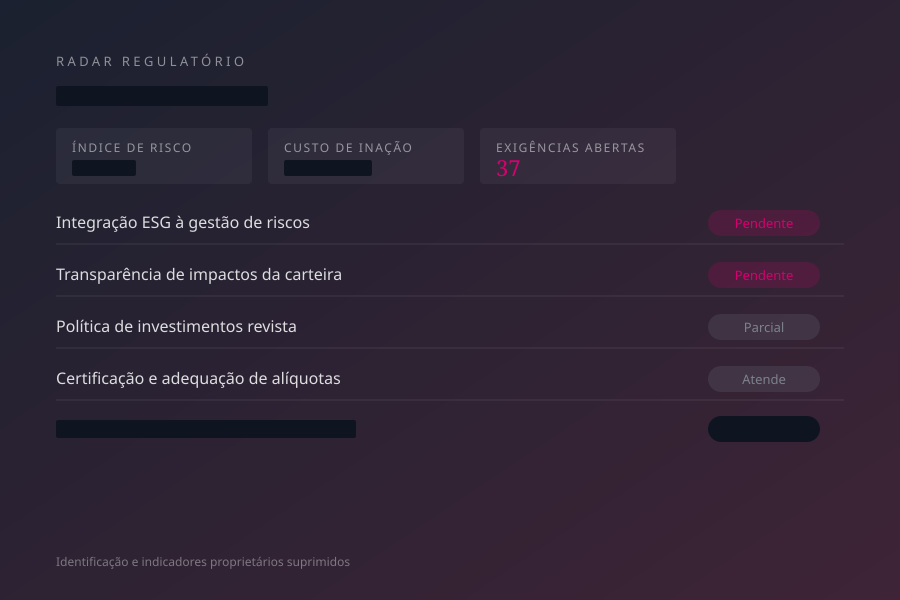

Fundos de previdência
Recursos técnicos, certificação e sistemas para EFPC e RPPS se adequarem às exigências normativas e maximizarem a gestão de seus ativos.
Ver programa →Iniciativa regional do London Impact Investing Network — Londres · Washington, D.C. · Brasil · Tóquio
Acesso a investimentos, financiamento competitivo e conformidade normativa passaram a depender de credenciais ESG — para empresas, fundos de previdência e o setor público. Hoje, o mercado engloba:
Requisitos ESG estão integrados ao mercado financeiro, às relações comerciais, aos repasses e financiamentos públicos e à gestão de entidades públicas e privadas. Quem não se adequa fica exposto a tarifas, custo de capital mais alto, multas e restrição de acesso a mercados.

Fundado em 2019, em Londres, o LIIN é um dos maiores grupos de investidores de ESG da Europa, com mais de 5.000 membros em 30 países, que juntos gerenciam mais de US$ 18 trilhões em ativos. O LIIN conta com representações e parceiros em Londres, nos Estados Unidos (Washington, D.C.), no Brasil e em Tóquio (2027). No Brasil, o LIIN é um programa exclusivo para potencializar instituições no mercado de ESG.
Esse é o foco do LIIN Brazil. O propósito é dar a organizações públicas e privadas as condições técnicas, as credenciais e o acesso que o mercado de investimentos ESG passou a exigir — e que dificilmente se constroem apenas internamente.
A atuação é seletiva e concentrada em quatro perfis institucionais com exposição direta a esse mercado: municípios, associações de municípios, fundos de previdência — RPPS e EFPC — e empresas privadas de alta exposição regulatória e comercial. Cada perfil tem um programa próprio, integrado, contínuo e escalonado ao porte da instituição.

Recursos técnicos, certificação e sistemas para EFPC e RPPS se adequarem às exigências normativas e maximizarem a gestão de seus ativos.
Ver programa →
Desenvolvimento de agências municipais de investimento, com serviços contínuos que conectam o município ao mercado global.
Ver programa →
Programas sob medida para posicionar a associação e sua região, com conexão a organismos internacionais e entidades no exterior.
Ver programa →
Planos anuais de adequação regulatória e comercial — acesso a mercados, investidores institucionais e financiamento inteligente.
Ver programa →O engajamento do LIIN Brazil é inteligente, de alto impacto e global. Com uma única assinatura, o filiado tem acesso a seis frentes escalonadas ao porte da instituição.
Sistema online integrado de gestão de indicadores de ESG, projetos e monitoramento.
Do compliance ao apoio na estruturação de investimentos, de forma permanente e especializada.
Para investidores, exigências normativas e posicionamento da entidade junto a parceiros no exterior.
Treinamento contínuo, recursos online sem limitação e certificados de participação.
Conferências anuais do LIIN, networking com investidores e missões institucionais no exterior.
Credencial do LIIN alinhada às exigências do mercado e a padrões internacionais.
O LIIN Brazil é liderado por Kurt Morriesen — diretoria executiva do Legal & General Investment Management (US$ 1,8 trilhão em ativos), Assessor Especial de Investimentos Sustentáveis da ONU, Gerente Sênior de Investimentos de Impacto no UN-PRI, com atuação em finanças estruturadas no BID, Banco Mundial, FOMIN e IFC.
O LIIN ESG Smart Report acompanha regulação, fundos e fluxo de capital — e o que muda para empresas, municípios e fundos de previdência no Brasil.



A filiação é anual e avaliada caso a caso. Descreva a instituição e o que está em pauta — retornamos para uma conversa técnica.